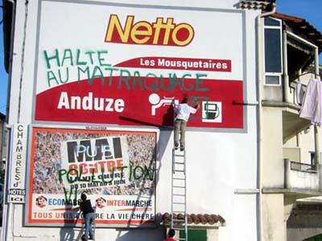

| |
Site dédié à la publication d'informations communiquées par le Collectif des déboulonneurs. En aucun cas ce site n'appelle à des actions illégales. | |
 |
||
|
Accueil du site > Gard > Anduze dans le Gard : journée du 26 mai 2006
Il y a foule sur le pont d’Anduze à 18 h 57, ce vendredi 26 mai 2006, pour le premier rendez-vous du Collectif des déboulonneurs du Gard. Au moins deux dizaines d’insurgés, en plus de la barbouilleuse et du barbouilleur ! La cible choisie : une immense façade au bord du Gardon, en plein coeur d’Anduze, entièrement couverte d’une peinture publicitaire à la gloire d’un supermarché et, paraissant presque petit juste en-dessous, d’un 4m par 3m dédié à ... un autre supermarché ! Un correspondant local du Midi Libre est au rendez-vous, à qui l’on remet les documents de campagne des déboulonneurs, ainsi qu’une revue de presse des précédentes actions à travers le pays. En pleine féria de printemps d’Alès, les autres journalistes avaient bien trop à faire pour se déplacer cette fois-ci, mais ce n’est que partie remise, car le sujet brûlant de la désobéissance civile antipublicitaire les intéresse fort ! Dès les premières mesures d’accordéon, tout ce beau monde entonne en choeur la chanson du Barbouilleur des Lilas, et les deux désobéissants se hissent à la cîme de leur échelle, faisant fi du vent et de leur vertige ! Au fil des couplets qui leur donnent des ailes, ils prennent leur temps pour inscrire de leur preste aérosol : "Halte au matraquage", "Votre pub ici : 50 cm x 70 cm", "Pub = pollution visuelle". Pendant ce temps, deux "passants indignés" composent à tour de rôle le 17 d’une cabine téléphonique pour prévenir les forces de l’ordre, qui se font déjà attendre... Les déboulonneurs peaufinent leur oeuvre de salubrité publique, attendant d’être pris en flagrant délit, quand la propriétaire de la façade publicitaire, véritablement indignée celle-là, vient s’inquiéter de ce qu’elle ne sera plus payée si la publicité est dégradée ! Descendu de son perchoir, l’un d’eux lui explique avec grande empathie que le barbouillage ne vise pas sa propriété et encore moins sa personne, mais la publicité qui s’impose sans trêve à la vue de tous. Après un échange courtois à propos de l’arnaque publicitaire, face à son air désemparé, il lui est suggéré que la seule issue possible est d’appeler la police... ce qu’elle fait immédiatement ! Les barbouilleurs remontent sur l’échelle pour apporter une dernière touche et attendre la police, leur aérosol à la main. Lorsque celle-ci arrive enfin, elle est accueillie par un grand "bonjour" en choeur, et les deux barbouilleurs tendent leur carte d’identité, expliquant brièvement leur acte et leur revendication. "Messieurs, nous sommes à votre disposition ! On y va ?". Cela détend le chef, qui se marre carrément ! Les barbouilleurs précisent immédiatement qu’ils souhaitent signer une déposition complète au poste, et qu’ils sont prêts à être placés en garde à vue pour le délit qu’ils viennent de commettre. Problème : ce vendredi soir, le chef et les autres espéraient un peu de temps libre, au milieu de la surcharge de travail liée à la féria d’Alès ! Il est désolé, il ne va pas pouvoir nous placer en garde à vue pour cette fois ! Mais allons, tout le monde en voiture, sous les applaudissements du Collectif, pour quelques heures supplémentaires... quel métier ! 
A 19 h 45 au poste, une franche rigolade très humaine commence pour le barbouilleur avec le chef, pendant que la barbouilleuse se coltine un plus jeune flic, très tendu, qui ne sait pas sortir de son rôle de dur à cuire qui veut lui faire avouer un tas de trucs inutiles et lui met la pression pour rien, puisqu’elle assume ses actes ! Ca n’est pas évident de garder son recul et sa tranquillité d’esprit face à un tel personnage si bien dans son rôle... qui ne veut même pas qu’elle modifie ou retire des éléments de la déclaration, alors que c’est son droit à tout moment avant de signer ! Mais qu’à cela ne tienne, les "je n’ai rien à déclarer" s’enchaînent, après la rituelle déclaration en vigueur chez les déboulonneurs : "Dans cette affaire, je me considère comme la victime du harcèlement publicitaire dans les espaces publics, auquel nul ne peut échapper... j’ai apporté une légitime réponse, c’est à dire mon droit de réponse, en état de légitime défense. Je m’engage à ne jamais payer de dommages et intérêts aux agresseurs afficheurs". A court de questions, les deux gendarmes en arrivent même à faire le va-et-vient entre les deux salles pour s’échanger les dépositions en cours ! Ils cherchent des idées dans l’argumentaire du Collectif des déboulonneurs qu’ils lisent attentivement - oh joie intérieure, dans le communiqué et la revue de presse que les interpellés leur ont remis pour transmettre au parquet. A 21 h 45, après avoir bu toute leur réserve d’eau et mangé des pommes insipides pendant la déposition, les déboulonneurs sont laissés libres, dans l’attente d’une convocation au tribunal correctionnel d’Alès, puisque les faits seront, semble-t-il, qualifiés en délit ! La propriétaire de la façade devrait porter plainte, ainsi que les loueurs des espaces publicitaires... C’est donc une franche réussite pour cette première action du Collectif du Gard. En partant, il a été promis au chef de ne pas récidiver à Anduze, pour ne plus perturber ses fins de semaines. Alors, le mois prochain, Alès ou Nîmes ? A suivre ! D’autres photos dans notre galerie |
|
Site utilisant SPIP - Hébergement Ouvaton
|